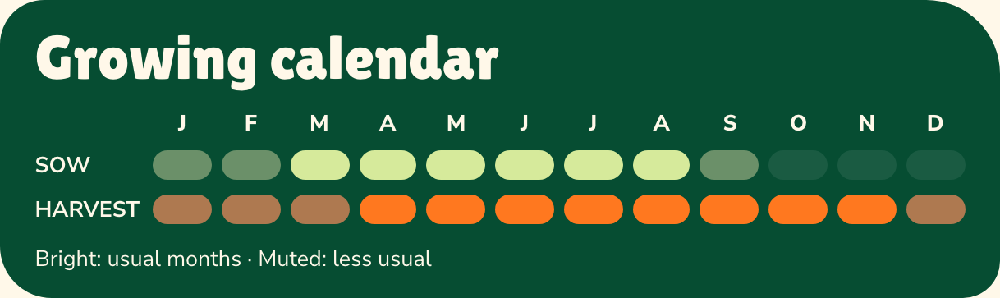

How to use
these sheets.
The symbols and shorthand make the guides quick to scan. Here are the distinctions that are less obvious at first glance.
Reading the calendar
Bright shades show the usual sowing and harvest months for temperate climates. For the purposes of this guide, a temperate climate is considered as being lowland England, US zones 8 to 9. Muted shades show less usual options for warmer climates. Use local conditions and the crop’s advice to choose your timing.

Usual
Temperate climates
Less usual
Warmer climates
Difficulty rating
Some vegetables, such as radishes, are great for beginners, whereas crops like celery and cauliflower will defeat even experienced gardeners in a bad season. The scale will give you an idea of how easy a crop is to grow, and how tolerant it is of adverse growing conditions.


Core needs
An under-supply of sun, water or manure can damage some plants, while too much can harm others. Use this as a guide to core vegetable requirements.